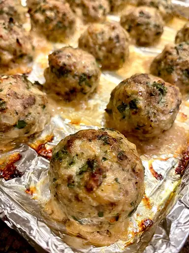

Meatballs

This Italian meatball recipe is very easy to make, and since we skip the messy step of pan-frying the meatballs, it becomes downright simple. Here I use a standard half-beef/half-pork mixture. Once the meatballs are baked, add them to your favorite prepared tomato sauce and simmer for 1 to 2 hours.
Ingredients
- ⅓ cup plain bread crumbs
- ½ cup milk
- 2 tablespoons olive oil
- 1 onion, diced
- 1lb groud pork mince
- 1lb ground beef mince
- 3 cloves of garlic, crushed
- 2 teaspoons salt
- 1 teaspoon ground black pepper
- 1 teaspoon dried italian herbs
- ½ teaspoon red pepper flakes
Method
- Cover a baking sheet with foil and spray lightly with cooking spray. Soak bread crumbs in milk in a small bowl for 20 minutes.
- Meanwhile, heat olive oil in a skillet over medium heat. Add onion; cook and stir until onion has softened and turned translucent, about 5 minutes. Reduce heat to low and continue cooking and stirring until onion is very tender, about 15 minutes more.
- Gently stir beef and pork together in a large bowl. Add onions, bread crumb mixture, eggs, Parmesan cheese, parsley, garlic, salt, black pepper, Italian herb seasoning, and red pepper flakes; mix together using a rubber spatula until combined. Cover and refrigerate for about one hour.
- Preheat the oven to 425 degrees F (220 degrees C).
- Form mixture into balls about 1 1/2 inches in diameter; arrange in a single layer on the prepared baking sheet.
- Bake in the preheated oven until browned and cooked through, 15 to 20 minutes.